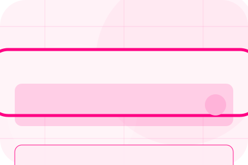
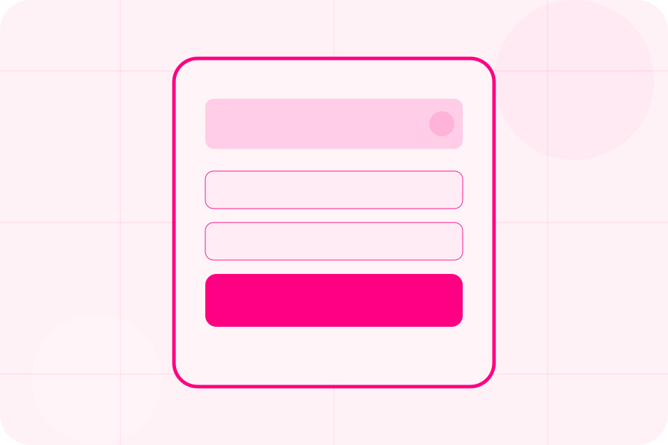
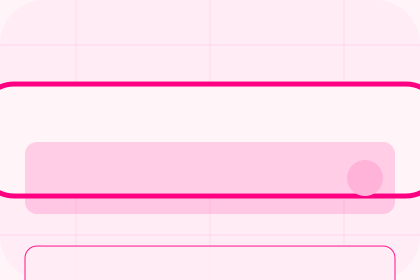

Context
Business gives the page a specific angle instead of repeating the navigation label.
Cover / 01
Cover opens as a clear insurance decision hub: what Shield offers, who it helps, why it matters, and which route to take first.
The first screen combines positioning, proof, primary action, and fast internal navigation, so people can act immediately or compare the rest of the cover route with context.
Friendly quote hero
Select the closest route and Shield keeps the next step, proof, and follow-up expectation aligned with family and asset protection.

Cover / 02
Overview adds professional context to the cover route, using the pink quote journey structure to support family and asset protection before visitors choose a next step.
Shield uses rounded policy cards and focused copy to make the decision easier to scan, aligning the section with family and asset protection rather than filling space.
Explore CoverOverview gives the page a specific angle instead of repeating the navigation label.
The rounded policy cards show what to compare, what to avoid, and what matters most for insurance, protection & risk cover visitors.
The final cue points to a useful internal route so the section keeps the journey moving.
Cover / 03
Life adds professional context to the cover route, using the pink quote journey structure to support family and asset protection before visitors choose a next step.
Shield uses rounded policy cards and focused copy to make the decision easier to scan, aligning the section with family and asset protection rather than filling space.
Explore CoverLife gives the page a specific angle instead of repeating the navigation label.
The rounded policy cards show what to compare, what to avoid, and what matters most for insurance, protection & risk cover visitors.
The final cue points to a useful internal route so the section keeps the journey moving.
Cover / 04
Health adds professional context to the cover route, using the pink quote journey structure to support family and asset protection before visitors choose a next step.
Shield uses rounded policy cards and focused copy to make the decision easier to scan, aligning the section with family and asset protection rather than filling space.
Explore CoverShield structures health around context, judgment, and a clear next route so visitors can compare the block quickly before they request a quote.
Request QuoteCover / 06
Property adds professional context to the cover route, using the pink quote journey structure to support family and asset protection before visitors choose a next step.
Shield uses rounded policy cards and focused copy to make the decision easier to scan, aligning the section with family and asset protection rather than filling space.
Explore CoverProperty gives the page a specific angle instead of repeating the navigation label.
The rounded policy cards show what to compare, what to avoid, and what matters most for insurance, protection & risk cover visitors.
The final cue points to a useful internal route so the section keeps the journey moving.
Cover / 07
Vehicle explains the practical scope, best-fit situations, and expected outcome so insurance visitors can compare options without decoding jargon.
The section keeps the offer concrete: what is included, who it is best for, what decision it supports, and which linked route gives the deeper detail.
Explore CoverWho should use vehicle and when it belongs in the cover journey.
The practical benefit visitors should expect after choosing this route.
Where to compare details, pricing, support, or contact options before committing.
Cover / 08
Exclusions adds professional context to the cover route, using the pink quote journey structure to support family and asset protection before visitors choose a next step.
Shield uses rounded policy cards and focused copy to make the decision easier to scan, aligning the section with family and asset protection rather than filling space.
Explore CoverExclusions gives the page a specific angle instead of repeating the navigation label.
The rounded policy cards show what to compare, what to avoid, and what matters most for insurance, protection & risk cover visitors.
The final cue points to a useful internal route so the section keeps the journey moving.
Cover / 09
Suitability adds professional context to the cover route, using the pink quote journey structure to support family and asset protection before visitors choose a next step.
Shield uses rounded policy cards and focused copy to make the decision easier to scan, aligning the section with family and asset protection rather than filling space.
Explore CoverShield structures suitability around context, judgment, and a clear next route so visitors can compare the block quickly before they request a quote.
Request QuoteCover / 10
Shield closes the cover route with a clear action, a quick reminder of the value, and a low-friction way to request a quote.
Visitors who are ready can use the primary action. Visitors who are still comparing can scan the section links, proof, and support routes before they request a quote.
Request QuoteThe final block keeps the choice simple: act now, compare one more proof route, or send enough detail for a focused response.
Request Quotefamily and asset protection
A quote-first insurance site with pink action, chat-like steps, playful policy cards, and claims reassurance. Cover ends with a direct path to request a quote, plus enough context for visitors who still need to compare.

Request QuoteCover, claims, limits, and exclusions depend on policy wording and insurer assessment.